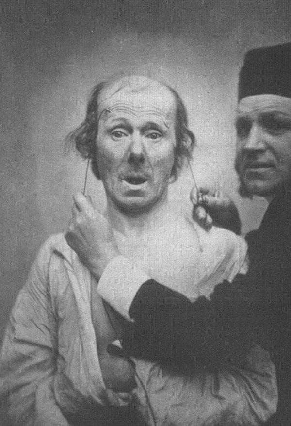

第3章
表情的一般原理（续完）
·General Principles of Expression（Continued）·
现在我们就来考察第三个原理，就是：有些动作，被我们认为是一定的精神状态的表情动作；它们是直接由于神经系统的构造而被引起的，起初就不依存在意志，而且也显著地不依存于习惯。

杜庆博士把电流通到一个老年人的面部的某些肌肉上去，引起他的各种不同表情，同时还将这些表情拍摄成照片。达尔文得到这些照片并拿给不同人看，几乎所有人都能辨认出照片上的表情，但大家似乎都不能用真正相同的语言来说明这些表情。
兴奋的神经系统不依存于意志和一部分习惯而对身体起有直接作用原理——毛发的颜色变化——肌肉的颤动——各种分泌作用的变化——出汗——极端苦痛的表情——大怒、大乐和恐怖的表情——引起和不引起表情动作来的两类情绪之间的对照——兴奋和抑制的精神状态——总结
现在我们就来考察第三个原理，就是：有些动作，被我们认为是一定的精神状态的表情动作；它们是直接由于神经系统的构造而被引起的，起初就不依存于意志，而且也显著地不依存于习惯。当感觉中枢受到强烈的激奋时候，神经力量就过多地发生出来，依照着神经细胞的相互联系情形，而朝着一定的方向传布开来；因为它和肌肉系统有关，所以也依照那些已经被习惯地运用的动作的本性，而朝着一定的方向传布开来。或者是像我们所看出的，神经力量的供应可以发生中断。当然，我们所做出的各种动作，都是被神经系统的构造所决定；可是，在这里将尽可能把那些在我们的意志支配之下或者由于习惯、或者依照对立原理而进行的动作除去不谈。现在我们所研究的问题是非常模糊不清的，但是因为它很重要，所以必须对它作比较详细的讨论；去查明白我们所不知道的情形，时常是有用的。
可以举出一种最显著的情形，来证明神经系统在受到强烈的刺激时候对于身体的直接影响；不过这是一种稀有的反常现象，就是毛发的颜色褪失；有时在一个人发生极度的恐怖和悲哀以后，就可以观察到这种现象。有一个可靠的事例的记载，讲到在印度，曾经有一个犯人在被押送去处死刑的时候，就发生这种情形；当时他的毛发的颜色变化得非常迅速，因此可以被大家的眼睛看出来。 (1)
还有一个良好的例子，就是肌肉颤动的现象；通常在人类方面和在很多或者大多数比较低等的动物方面，都可以看到这种现象。肌肉颤动是没有用处的，往往有很大的害处；它不可能起初由于意志的帮助而获得，而且此后又会去和任何一种情绪联合而成为习惯的动作。有一位卓越的权威家向我肯定说，年幼的孩子不会发生颤动，但是在那些会引起成年人发生剧烈颤动的情况下，却会发生痉挛。各种不同的个人由于极不相同的原因，而发生出各种程度很不相同的颤动来：在热病发作以前，虽然病人的体温在常温以上，他也会由于皮肤表面受寒而颤动起来；在患血毒、狂呓症和其他疾病时候，也会发生颤动；在极度疲倦而体力衰竭时候，也发生颤动；在受到重伤的时候，例如在被灼伤的时候，就发生局部的颤动；还有在插入导尿管的时候，会发生某种方式的颤动。大家都知道，在一切情绪当中，最容易引起颤动的情绪就是恐惧；可是，有时在大怒和大乐之下，也会发生颤动。我记得，有一次看到一个男孩，在他生平第一次射中了一只在飞行的沙锥（田鹬）的时候，他的双手由于狂喜而颤抖得非常厉害，因此他暂时就无法把子弹装进自己的猎枪里去； (2) 我曾经从一个借给我猎枪的未开化的澳大利亚土人那里，听到一个完全相似的情形。美妙的音乐，会激发起听者一种模糊的情绪，因而使有些人发生一股沿着脊柱从上而下的战栗。在上面所讲到的几种说明颤动方面的身体原因和情绪当中，好像是极少共通的；彼哲特（J. Paget）爵士曾经告诉我说，这个问题是非常模糊不清的；我很感谢他告诉我几个在上面所举出的记述。有时在还没有达到精疲力竭以前，很早就曾由于大怒而发生颤动；有时则由于大乐而同时发生颤动；因此，从这两方面可以认为，神经系统的任何一种强烈的兴奋情形，就会阻止神经力量稳定流到肌肉方面去。 (3)
强烈的情绪对于消化道和某些腺（例如肝脏、肾脏或者乳腺）的分泌发生影响的情况，也是一个卓越的例子，去说明感觉中枢对这些器官发生直接的作用，而并不和意志有关，或者也不和任何有用的联合性习惯有关。无论在那些受到影响的器官方面，或者在它们所受到的影响程度方面，都可以在各种不同的人当中发生出极不相同的事情来。
心脏日日夜夜在以多么惊人的本领不断地跳动着，而且对于外界的刺激极其敏感。卓越的生理学家克劳德·伯尔那德（Claude Bernard） (4) 曾经表明一根敏感神经的极微小的兴奋怎样会对心脏发生作用；甚至在很轻微地触动这根神经，而被试验的动物还不可能因此感觉到痛苦的时候，心脏也曾受到影响。因此，我就可以预料到，在精神非常兴奋的时候，它立刻就会对心脏发生影响；大家都知道这种情形，并且感到它确实是这样的。克劳德·伯尔那德还多次着重指出说（这种说法也值得大家特别注意），心脏在受到影响时候，它就对脑子发生作用；而脑子的状况又会通过迷走神经而对心脏再发生作用；因此，在发生任何一种兴奋的时候，就会在这两种最重要的身体器官之间发生很多次相互作用和反应。 (5)
感觉中枢直接对于那个调节小动脉内径的血管运动神经系统发生作用；例如我们可以看到，一个人由于羞惭而会脸红耳赤；不过，我以为，在这个脸红的例子里，却可以用那种由于习惯而发生的特殊状态，来部分地说明神经力量向面部血管的传送受到阻碍的情形。我们也能够去对毛发在恐怖和大怒的情绪下不随意地竖直的原因，作出一些说明来，不过这种说明是很少的。眼泪的分泌作用，显然无疑是要依靠一定的神经细胞之间的相互联系来决定；可是在这里，我们也再能够探寻出不多几个阶段来；神经力量的主流就在某些情绪之下，通过这些阶段而沿着所需的路线转变成为习惯的行动。
如果来把某些比较强烈的感觉和情绪的外表特征作简略的考察，那么这件事情就会最良好地向我们表明（不过还有些模糊不清），这里所研讨的关于兴奋的神经系统对于身体的直接作用的原理，在多么复杂地和前面关于习惯上联合的有用动作的原理互相配合着。
动物在受到一种难以忍受的苦痛时候，通常就以一种可怕的抽筋动作来表达它们的苦恼；而那些习惯上使用声音的动物，则同时发出尖锐的叫声和呻吟声来。身体上的差不多每条肌肉都被激发起来，而发生强烈的作用。在一个人遇到这种情形时候，他的嘴有时就会紧紧地压缩起来，或者更加常见的是嘴唇向后退缩，同时咬紧牙齿或者磨动牙齿。据说，在地狱里可以听闻到“咬牙切齿”的声音；我曾经也清楚地听到一头患着很厉害的肠炎的母牛在磨动着臼齿的声音。动物园里的雌河马，在产子时候发生很大痛苦，它就不断地走来走去，或者把身子横下打滚，把双颚不断张开和闭紧，并且把牙齿互相磨动得发出格格声来。 (6) 在人类方面，当一个人受到这种痛苦时候，他就会把眼睛张大，像在可怕的吃惊时候凝视着的情形那样，或者双眉紧锁起来。同时全身出汗，面孔上汗流如雨。血液循环 (7) 和呼吸作用 (8) 都受到严重影响。因此，鼻孔通常就扩大起来，往往发生颤动；有时呼吸会发生阻碍，以致血液在发紫的面部上停滞起来。如果这种苦恼情形非常严重而且延长很久，那么所有这些特征都会发生变化；接着就是体力完全丧失，同时昏厥过去或者发生痉挛。
感觉神经在受到刺激时候，就把一些兴奋传送给那个原来发生出它来的神经细胞，而神经细胞则又把自己的兴奋起初传送给身体的相反一侧的相应的神经细胞，此后则沿着脑脊髓系统向上和向下传送给其他的神经细胞，根据兴奋的强度而以或大或小的程度传送开来；结果全部神经系统都会兴奋起来。 (9) 在进行这种不随意的传送神经力量的时候，也会发生意识，但是有时也不发生意识。现在还不能知道，为什么神经细胞的刺激会发生或者放出神经力量来；可是，所有最卓越的生理学家，例如米勒、微耳和、伯尔那德等， (10) 好像都作出结论说，这种发生或者放出神经力量的情形是确实这样的。正像赫伯特·斯宾塞先生所指出，可以使人认为，“有一个不可争论的真理，就是：在任何时刻，那种放出的神经力量的现存数量，就是那种会用不明白的方法在我们身体里引起一种被我们叫做感情（feeling）的状态的神经力量，应该向某一个方向传送过去而消耗掉，应当在某一个部位上产生出一种力的当量的表现来”；因此，在脑脊髓系统发生很强烈的兴奋和过多地放出神经力量来的时候，这种力量就可以被耗用在强烈的感觉、活跃的思考、狂热的行动或者腺的加强活动方面。 (11) 斯宾塞先生还进一步肯定说，一种“不受到任何动机所支配的神经力量的溢流，将明显地选取最惯熟的通行路线；如果这些通行路线不够，那么它接着会流进到那些较不惯熟的通行路线上去”。因此，那些最经常被使用的面部肌肉和呼吸器官的肌肉，就时常容易被最早推动起来；其次是上肢的肌肉，再其次是下肢的肌肉， (12) 而最后则是全身肌肉被推动。 (13)
一种情绪无论达到怎样很强烈的程度，但是它如果通常不去为了减轻或者满足自己而引起有意的动作来，那么也就不会具有一种要诱发任何一类行动的倾向；可是，如果这些行动被情绪激发起来，那么它们的性质在很大程度上，是被那些在同样情绪下为了一定目的而时常有意地进行下去的行动来决定的。剧烈的痛苦使现在的一切动物，而且也使过去无数世代的动物，都去作最激烈的各种不同的努力，以便逃避开这种受苦的原因。我们时常可以看到，动物即使在它的一只脚或者身体的其他个别部分受到伤害的时候，也具有一种要摆脱开受伤部分的倾向，好像是要摆脱开受伤的原因似的，可是显然这是办不到的事情。因此，有一种习惯已经被建立起来，就是每次在受到极大苦痛的时候，就以最大的努力去运用全部肌肉。因为大家在习惯上最常使用胸部和发声器官的肌肉，所以这些肌肉就特别容易在这时候被推动起来，这样就发出了尖锐的叫声和高喊声。可是，大概这种由于高喊声而产生出来的利益，也在这里起有相当重要的作用，因为大多数幼小的动物，在遇到灾难或者危险的时候，就大声呼喊自己的父母来救助，也好像同一团体里的会员彼此互相寻求帮助的情形一样。
还有一个原理，就是：一种对于神经系统的力量或者能力具有限度的内部意识，在受到极大苦痛时候，会去加强那种要做剧烈动作的倾向，不过这种程度是属于次要的。一个人不能够一面深思熟虑而同时又使用出自己的极大的肌肉力量来。正像希坡克拉特（Hippocrates，约公元前460—359年）很早就已经观察到的那样，如果同时有两种痛苦被感觉到，那么最强烈的一种就会使另一种痛苦减轻。可以看到，殉教者们在深陷于宗教狂热的时候，大概时常对于最可怕的毒刑会毫无感觉。那些去听受鞭打处罚的水手，有时就把一块铅含在嘴里，准备用尽全力去咬紧它，以便把这种痛苦熬受过去。产妇为了要减轻自己的痛苦，就事先准备去竭力使用她们的肌肉。
因此，我们可以知道，在受到很强烈的苦痛时候，出现一种要去作最激烈的、差不多痉挛的动作的倾向；而这种倾向大概是同时由三个方面来引起的：第一是那种从最初被激奋起来的神经细胞里发生的神经力量的没有一定方向的放射；第二是那种企图挣扎而逃避开受苦的原因的长期不断的习惯；第三是那种要使随意的肌肉活动去解除苦痛的意识；正像大家所公认的，这些最激烈的动作，包括发声器官的动作在内，是最能够表达出受苦状况来的动作。
因为单单触动感觉神经就会直接对心脏发生作用，所以剧烈的苦痛也显然会对心脏发生同样的作用，但是这种作用要更加强烈得多。甚至在这种情形下，我们也不应该忽略习惯对心脏的间接影响这方面；例如，后面我们在考察到大怒的特征时候，就会相信这一点。
在一个人受到疼痛的苦恼的时候，时常有汗珠从他的面部上滴落下来；有一个兽医向我肯定说，他曾经多次看到，在马和牛受到这种苦恼时候，汗水就从马的腹部滴落下来和从它的两条大腿的内侧流下去；而牛则全身都有汗水滴落下来。这个兽医是在马和牛并没有用力挣扎而可以造成出汗的情形时候，观察到这种现象的。前面曾经讲到的雌河马，在生下小河马的时候，满身冒出了红色的汗水来。在极度恐惧的时候，也曾出汗；上面所说的兽医时常观察到，马由于这种原因出汗；巴尔特莱特先生也看到，犀牛由于恐惧而出汗；而人由于恐惧而出汗则是大家都知道的一种征候。在这些情形下，出汗的原因是完全不明白的；可是，有些生理学家却认为，这种出汗现象和毛细管里的血液循环的能力减弱有联系的；我们也知道，那个调整毛细管里的血液循环的血管运动神经系统，会受到精神方面的强烈影响。至于说到面部的某些肌肉在受到很大苦恼时以及由于其他情绪而发生的动作，那么我们最好还是在后面讲到人类和比较低等动物的特殊表情时候，再来仔细考察它们。
现在我们来讲到大怒的特殊的征候。在这种极其强烈的情绪的影响下，心脏的动作大大加速起来， (14) 或者它可以被扰乱得很厉害。这时候由于血液的回流受到阻碍，面部变红，甚至发紫，或者会转变成为像死人般的苍白色。呼吸变得困难起来，胸部感到发胀，而张大的鼻孔则颤动起来。时常全身发抖。声音也受到影响而发生变化。牙齿咬紧，或者互相磨动；同时肌肉系统时常受到刺激而发生猛烈的、几乎是狂乱的动作。可是，一个人在这种状态下所表现的姿态，通常是和一个受到疼痛的苦恼的人的无目的的抽筋和挣扎情形不同的，因为这些姿态多少总是明显地表现出一种要去打击敌人或者去和敌人打架的动作来。
所有这些大怒的特征，大概都是显著的由于兴奋的感觉中枢的直接作用而出现；当中有几种特征则显然是完全由于这种作用而出现。可是，所有各种动物，还有它们过去的祖先，在受到敌人攻击或者威胁的时候，都曾经在斗争方面和在防卫自身方面使用过自己的全身的极大力量。如果动物还没有采取这种行动，或者还没有这种企图，或者至少是还没有这种欲望，那么就绝不能正当地说，它在大怒发作了。因此，一种对于肌肉用力的遗传性习惯，就可以在这种和大怒联合情形下被获得，而这种状况将直接或者间接对各种器官发生影响，差不多也像身体上所受到的重大苦痛对这些器官发生影响的情形一样。
心脏也确实无疑地会因此受到直接的影响；可是，它极可能也是由于习惯而受到影响的，更用不到说它并不受到意志的支配了。我们知道，我们有意去作出的任何的重大努力，都会由于机械的原理或其他的原理的支配，而对自己的心脏发生影响；在这里用不到再来考察这些原理了。在第一章里已经指明，神经力量容易沿着惯熟的通行路线流动，就是沿着那些进行有意行动或者无意行动的运动神经流动，并且沿着感觉神经流动。因此，甚至是中等程度的努力，也会具有一种对心脏发生作用的倾向。我们已经举出了这么多的例子来证明联合性原理；根据这个原理，我们可以差不多确实地认为，任何一种感觉或者情绪，也像上面所说的习惯上引起剧烈的肌肉动作的苦痛或者大怒一样，将会立刻影响神经力量向心脏的流动情形，不过当时可能不表现出任何的肌肉用力的现象来。
正像我在前面已经讲到的，心脏因为不受到意志的支配，就会很容易由于习惯的联合而受到影响。一个人如果有些发怒，或者甚至大怒发作，那么还可以去控制自己身体的动作，但是他却不能够去阻止心脏的急跳。他的胸部大概会感到有几次发胀，而他的鼻孔也同时颤动起来，因为呼吸的动作只不过一部分是有意的行动。面部的那些不大服从于意志的肌肉，也有时会同样地只透露出一种轻微的很快消失的情绪来。腺类也完全和意志没有关系，所以一个人在受到悲哀的痛苦时候，虽然还可以控制面部的表情，但是时常不能够阻止眼泪从自己的眼睛里淌出来。如果把一种有诱惑力的食物放置在一个饥饿的人面前，那么他虽然还可以不作出任何的外表姿态来表明自己饿火中烧的情形，但是却不能去阻止唾液的分泌。
在快乐到极点或者十分生动的愉快的时候，就会出现一种要去作出各种无目的的动作和发出各种不同的声音来的强烈倾向。我们从下面的例子里就可以知道这一点：我们的年幼的小孩在快乐的时候，就会发出高声大笑、拍手和跳跃；一只狗在跟随主人出外散步时候，就会乱跳和乱叫；一匹马在被带到一片空旷的田野上的时候，就会作着戏跃。 (15) 快乐会使血液循环加速，因此也就刺激了脑子，而脑子又再反过来对全身发生作用。可以认为，上面所说的这些目的的动作和加强的心脏的活动，主要是由于感觉中枢的兴奋状态 (16) 和这种状态所引起的神经力量没有一定方向的溢流而产生的，正像赫伯特·斯宾塞所主张的情形一样。应当注意到，在这里主要是由于预料到愉快的情形，而引起身体作无目的的放肆动作和发出各种不同的声音来，却不是由于真正享受到这份愉快而这样做的。我们从自己的小孩和狗方面就可以知道这一点；小孩在盼望任何一种很大的愉快事情和款待的时候，就会这样做；狗在望见一盆食物时候，就欢跃起来，可是当它们一得到食物的时候，却反而不再用任何的外表特征来表示自己的高兴，甚至连自己的尾巴也不摇摆了。所有各种动物，在获取自己的差不多一切愉快事情时候，除了获取温暖和休息的愉快以外，都同时发生活跃的动作，而且长时间发生这些动作，也好像在猎取或者找寻食物方面和在追求雌性配偶方面的情形一样。不但这样，一个人在长期休息和幽居一处以后，即使单单去作一次肌肉的努力，也会感到自己的身心愉快，正像我们亲自所感觉到的和从幼年动物的嬉戏方面所看到的情形一样。因此，我们单单根据后面这一个原理，大概也就可以预料到，生动的愉快就会很容易在肌肉动作方面表现出来。
一切走兽，或者差不多一切走兽，甚至是鸟类，都会由于恐怖而引起身体颤动来。这时候皮肤变成苍白色，身上冒出汗来，而毛发则直竖起来。消化道和肾脏的分泌物也增加起来，并且由于括约肌松弛而被不随意地排泄出身体外去； (17) 例如在人类方面，大家都知道有这种情形：还有在牛、狗、猫和猿类方面，我也看到过这种情形。这时候呼吸急促起来。心脏跳动得迅速、狂乱和剧烈；可是，心脏是不是用更大的压力把血液推动到全身去这一点，还有可能使人怀疑，因为看上去身体表面好像没有血色，而肌肉的紧张力量也很快就消失了。例如，曾经有一匹受惊的马，坐在它的鞍背上，很清楚地感觉到它的心脏跳动，甚至我可以计数出心跳的次数来。精神能力因此受到很大摧残。接着立刻就全身无力而倒下，甚至昏厥过去。我曾经看到，一只受惊的金丝雀（canary-bird）不仅全身颤动和嘴的周围皮肤转变成白色，而且昏厥过去； (18) 还有一次，我在房间里捕捉到一只知更鸟（robin）；它有一段时间完全昏厥过去，因此我当时以为它真的被吓死了。
大概这些征候大多数和习惯无关，而是感觉中枢受到扰乱的状态的直接结果；可是，究竟是不是应当全部用这个原因来说明它们，这还是疑问。一只动物在受到惊吓时候，差不多常常暂时坚站不动，以便集中自己的感觉，去确定危险的来源，而有时则是为了避免对方的注意。可是，接着它就立刻急匆匆地飞跳起来，也像在斗争时候一样，不惜使用一切力量，一直奔跑到精力完全耗光为止，同时呼吸和血液循环衰退，全身肌肉颤抖，满身是汗，以至于再也不能向前跑一步了。因此，在这里好像用联合性习惯原理，不可能去部分地说明上面所举出的极度恐惧的特殊的征候当中的几个征候，或者至少是不可能去论证这些征候。
我以为，我们可以从下面两点来作结论说，联合性习惯原理对于引起上面几种强烈的情绪和感觉的表情动作方面，起有主要因素的作用：这两点就是：第一是考察另外几种通常不需要任何随意运动来减轻或者满足自己的强烈情绪；第二是所谓精神的兴奋状态和抑郁状态双方在性质上的相反情形。再也没有什么情绪会比母爱更加强烈的了；可是，一个母亲虽然对自己的孤立无援的婴孩可以感到最深刻的爱情，却还是没有用任何外表的特征来表明它；或者是她只不过用轻微的爱抚动作连同微笑和温柔的眼光来表明它。可是，只要有人故意伤害她的婴孩，那么就可以看到，情形发生了多么大的变化！这时候她就用多么可怕的样子急跳起来，她的眼睛是多么闪闪发光，面孔是多么发红，胸部是多么发胀，鼻孔扩大而且心脏急跳；这是因为愤怒而在习惯上引起了这些剧烈的动作来，却已经不是母爱了。雌雄两性之间的爱情，则和母爱大不相同；我们知道，当一对恋爱的人相遇的时候，他们俩的心脏迅速跳动，呼吸急促，脸孔闪现红色，因为这种爱情是积极的，和母亲对自己的婴孩的爱情并不相同。
一个人有时会怀有一种充满最恶毒的憎恨或者猜疑的心情，或者受到妒忌或嫉妒的腐蚀；可是，因为这些感情并不立刻引起动作，又因为它们通常要延续到相当时候，所以它们也没有用任何外表的特征来表明，只不过一个陷于这种状态的人确实显得不快活或者容易动怒。如果这些感情真的爆发出来，并且转变成为公开的行动，那么它们就转变成为大怒，并且明显地暴露出来。画家们如果得不到那些讲述关于猜疑、嫉妒、羡慕等方面的故事的辅助的资料的帮助，那就极难去描绘出这些感情来；诗人们也同样要使用那些像“绿眼的嫉妒”（green-eyed jealously）这类模糊不清的幻想的说法。斯宾塞把嫉妒描写成“卑劣、丑恶而且可怕，在他的眉毛下面还斜眼睛看人”等；莎士比亚讲到妒忌“使她的丑恶的外衣里面有着歪脸形相”；他又在另一处说道，“绝不能用恶毒的妒忌来筑造我的坟墓”；还有一处说道，“苍白色的妒忌的威胁是不可以达到的”。
情绪和感觉往往被划分成为兴奋的和压抑的两类。如果人或者动物的一切肉体的和精神的器官——随意和不随意的运动器官，知觉，感觉、思想等器官——都比平常更加旺盛而且迅速地执行自己的机能，那么我们就可以说，这个人或者动物被兴奋起来；如果在相反的情形下，那么就可以说，这个人或者动物被压抑下去。愤怒和快乐起初是兴奋的情绪，而且它们，特别是愤怒，自然而然地引起强有力的行动来；这些行动就对心脏起作用，而心脏则再对脑子起作用。有一个医生曾经向我举出一个关于愤怒的兴奋性质的证据来道，一个人在极度疲倦的时候，如果去故意想到一些假想的受气的事情，并且发起怒来，那么就会无意识地恢复自己的精力；我自从听到他的说法以后，就有时也认为它是十分正确的。
还有几种精神状态，起初显出是兴奋的，但是很快就转变成为极大程度的压抑状态。如果一个母亲突然丧失了自己的孩子，那么她有时就会由于悲哀而发狂；应该认为，这时候她处在兴奋状态里；她就来回乱跑，撕散头发或者衣服，把双手绞扭起来。后面这一种动作，大概是受到对立原理的支配，因为它表明出孤立无援的内部感觉和无法可想的意识。可以认为，还有一些杂乱的剧烈的动作的发生原因，一部分是要靠了肌肉的努力来减轻这种兴奋，另一部分则是神经力量从兴奋的感觉中枢向外作没有一定方向的溢流。可是，在一个人突然丧失自己所爱的人时候，他当时所发生的最初而且最普遍的一个想法，就是要尽可能设法去做到一件救助这个丧失的人的事情。有一个卓越的观察家， (19) 在记述一个突然听到父亲死亡的女郎的行动时候说道，她“绕着家屋乱走，同时绞纽着双手， (20) 好像是疯子一样，并且说道，‘这是我的过失’；‘我应当永久不离开他的’；‘我为什么不在夜里守坐在他的身旁呢’”等等。这一类想法如果在我们的心头活跃地出现，那么按照联合性习惯原理，就会引起一种要去作出某种强有力的动作来的最坚强的倾向。
当一个受到这些苦难的人完全意识到事情已经到了无法可想的地步时候，他就马上会发生失望或者深深的悲叹，去代替以前的狂乱的悲哀。这个受难人就呆坐不动，或者把身子略微前后摇动；血液循环变得缓慢；呼叹的声音差不多不能听到， (21) 并且发出深深的叹息声来。所有这些动作都对脑子发生作用，而且接着全身无力倒下，同时肌肉痉挛和双眼发黑。因为这时候联合性习惯已经再不激起受难人的行动，所以他的朋友们就必须使他去作一些随意的努力，而不要让他陷于静默而不动的悲哀当中。这种随意的努力使心脏激奋起来，而心脏又去对脑子发生作用，因而帮助精神去承受自己的严重的悲哀的负担。
如果苦痛是严重的，那么它立刻会引起极度的压抑状态 (22) 和全身无力倒下的现象；可是，它最初也是一种刺激物，起有兴奋作用，因而引起行动来；例如，我们在鞭打一匹马的时候，就看到这种情形；还有在有些外国地方，对拖车的阉牛施以可怕的折磨，以便使它们恢复精力，这也是一个例子。在一切情绪当中，恐惧是最压抑的情绪；它很快引起完全无助的全身倒下，正好像是在那些要逃避危险而作的最激烈的长久企图的结果方面，或者是在和这些企图的联想方面所观察到的情形，不过这些企图实际上并没有实现。虽然这样，甚至是极度的恐惧，最初却也时常像一种强烈的刺激物那样发生作用。一个人或者动物在发生恐怖而被迫拼命的时候，就曾获得惊人的力量，而成为大家知道的极其危险的东西。
总之，我们可以得出结论说，这个关于感觉中枢由于神经系统的构造并且起初就不依存于意志而对身体起有直接作用的原理，在决定很多表情上具有极大的影响。下面这些现象就可以作为这个原理的良好例子，就是：在各种不同的情绪和感觉之下，肌肉发生颤动，皮肤出汗，消化道和腺类的分泌量发生变化。可是，这一类动作时常和另一些受到我们的第一个原理支配的动作配合在一起；第一个原理就是：有一些动作，在已知的精神状态下，为了满足或者减轻一定的感觉、欲望等而曾经时常具有直接或者间接的用处；而现在这些动作在类似的情况下，单单由于习惯，即使是没有用处，也仍旧在发生出来。我们已经从下面几点里得出这类配合情形的例子，至少也是部分地得出了这些情形，就是：从大怒时候的发狂的姿态方面，从极度苦痛时候的痉挛方面，还有大概是从心脏和呼吸器官加强活动方面。即使是在这些和另一些情绪或者感觉极其微弱地发生出来的时候，也会由于长期联合的习惯的力量，而仍旧出现一种要进行相似动作的倾向，而且正是这些极少受到有意的支配的动作，通常会被最长久地保存下去。我们的第二个原理——对立原理——有时也起有一定的作用。
最后，我以为，读者们在依次阅读这本书的时候可以看出，根据现在我们已经讨论过的三个原理，就能够去说明这么多的表情动作，因此以后就可以有希望去找出一切表情动作的说明来，或者也可能根据另一些极其相似的原理来找出它们的说明来。可是，在各种特殊情形里，时常不可能去决定说，在这三个原理当中，究竟哪一个原理应当起有多么大的作用；而且在表情的理论里，仍旧还有很多的要点没有搞明白。
————————————————————
(1) 参看普舍（M. G. Pouchet）所收集的有趣的事例，载在《两个世界评论》杂志（Revue des Deux Mondes ）里，1872年1月1日，第79页。在几年以前，伯尔发斯特（Belfast）的不列颠协会（British Association）也发表过一个事例。［朗格（Lange，“Uber Gemüthsbewegungen”，库拉拉从丹麦文译成德文，莱比锡，1887年，第85页）从孟特加查的著作里引用一个关于驯狮人的记事；这个驯狮人在兽笼里作了拼死的决斗以后，在一夜里就落尽了自己的头发。还引用了一个关于女郎的相似的例子；这个女郎在房屋倒坍时候受到极大恐怖，在此后不多几天里，她的全身毛发都脱落，甚至眼睫毛也脱落去了。］
(2) ［这里所讲到的男孩就是达尔文自己。参看《查理士·达尔文的生平和书信集》（Life and Letters of Charles Darwin ）第一卷，第34页。］
(3) 米勒指出说（《生理学基础》英文译本，第2卷，第934页），当感情十分强烈的时候。“所有一切脊髓神经都受到这种强烈的影响，以致达到不完全的麻痹状态，或者发生全身剧烈颤动”。
(4) 克劳德·伯尔那德：《关于活体组织的特性的讲义》（Leçons sur propriéritées des Tissus vivants ）1866年，第457—466页。
(5) ［关于情绪对于脑子里的血液循环的影响方面，可以参看莫索的著作（Mosso：《论恐惧》，La Peur ，第46页）。他在这本书里，对于那些在头盖骨受伤时候可以被观察到的脑子里发生脉动的情形，作了有趣的叙述。在莫索的同一个著作里，有很多关于情绪对血液循环的影响的有趣的观察资料。他曾经用自己的血量计来演示情绪在引起手臂等的血量减少方面的影响；他又用自己的天平去表明血液在极小的刺激下流向脑子去的情形；例如，在病人所睡的房间里，如果作出一种轻微的声音，而这种声音还不足够去惊醒病人，那么这种情形也会发生。莫索认为，情绪对于血管运动系统的作用好像是适应的作用。他以为，心脏在恐怖时候的剧烈跳动，对于准备身体去作一般的重大努力方面是有用的。他也同样对恐怖时脸色发青的情形作了说明如下（同上书，第73页）：“Quand nous sommes menacés d'un péril，quand nous ressentons une frayeur，une émotion，et quel'organisme doit rassembler ses forces，une contraction des vaisseaux sanguins se produit automatiquement，et cette contraction rend plus actif le mouvement du sang vers les centres nerveux.”（“我们在遇到某种危险的威胁时候，在感受到恐惧的时候，就进入兴奋状态，同时身体就应该去集中自己的一切力量，所以血管系统就自动地收缩起来，而血液则更加迅速地流到神经中枢去。”）］
(6) 巴尔特莱特：《一匹河马的诞生情形记》（Notes on the Birth of a Hippopotamus ），动物学会通报（Proc. Zoolog. Soc. ），1871年，第255页。
(7) ［根据孟特加查的著作（“Azione del Dolore sulla Calori ficazione ”，米兰，1866年），在家免受到轻微而暂时的痛苦时候，它的脉搏也曾因此上升；可是，他认为，这种脉搏上升的原因，与其说是由于苦痛本身，倒不如说是由于那种随着苦痛同时发生的肌肉收缩所造成。剧烈的长期苦痛，会引起脉搏速度大减，而且这种脉搏缓慢情形会延长到相当长的时间。］
(8) ［根据孟特加查的著作，在高等动物的情形方面，苦痛会引起呼吸变得急促而不规则，此后就使呼吸缓慢下去。参看他的文章，载在意大利伦巴底《医学杂志》（Gazetta medica Italiana Lombardia ）上，第5卷，米兰，1866年。］
(9) 关于这个问题，可以参看克劳德·伯尔那德所著的《关于活体组织的特性的讲义》，1866年，第316、337和358页。微耳和在论脊髓（Ueber des Rückenmark，Sammlung wissenschaft，Vorträge，第28页）这篇文章里，也作了差不多完全相同的说明。
(10) 米勒（《生理学基础》，英文译本，第2卷，第932页）在讲述到神经的时候说道：“无论哪一种条件在发生任何突然的变化时候，就会使神经中枢行动起来”。可以参看克劳德·伯尔那德和微耳和两先生在上面一个附注里所提到的两个著作里所讲到的关于这样的问题的文字。
(11) 斯宾塞：《科学、政治等论文集》（Essays，Scientific Political etc. ），第二集，1863年，第109页和第111页。
(12) ［亨列提出了一个有些相似的见解，《人种学讲义》（Anthropologische Vortäge ），1876年，第一册，第66页。］
(13) 霍伦德爵士在讲到一种叫做手忙脚乱（fidgets）的有趣的身体状态时候（《医学摘记和评论》，Medica Notes and Reflexions ，1839年，第328页），指出说，这种状态好像是由于“某种刺激的原因蓄积而发生；这种原因要求肌肉动作，来减轻自己的蓄积”。
(14) 我对加罗德（A. H. Garrod）先生非常感谢，因为他告诉我洛伦（Lorain）先生关于脉搏的著作；在这个蓍作里，提供出一个妇女在大怒时候的脉搏线图来；它表明出，同一妇女在大怒时候和在平常状态时候的脉搏速度和其他特征极不相同。
(15) ［培恩先生在下面一篇文章里对这段文字作了批评：论达尔文的《人类和动物的表情》（Review of Darwin on Expression ）；这是感觉和智力这本书里的附录文章，1873年，第699页。］
(16) 在稀有的精神的陶醉（Psychical Intoxication）里，最良好地表明出，非常强烈的快乐对脑子起有多么大的兴奋作用，而脑子又对身体起有多么大的影响。克拉伊顿·勃朗博士（医鉴，Medical Mirror，1865年）记录一个有强烈的神经质的青年；在他接到电报而知道有一份遗产已经遗赠给自己以后，起初他的脸色变得苍白，接着就非常快活，而且立刻精神振作起来，但是他的脸色发红，并且显得十分焦躁不安。此后，他便和自己的朋友去散步，以便使自己的心神镇定下来，但是在回返时候，他的脚步不稳，身子摇摆不定，大声乱笑起来，具有容易激动的脾气，接连不断地讲着话，并且在大街上高声歌唱。虽然大家都以为他已经喝醉了酒，但是的确已经有人肯定，他对任何的酒类都没有接触到过。在过了一段时间以后，他就呕吐起来；当时曾经把他吐出的胃里的半消化的内含物加以检查，却并没有发现酒的气味。后来，他就熟睡起来；在他睡醒以后，身体恢复健康，只不过感到有些头痛、作呕和全身无力罢了。
(17) ［哥本哈根（Copenhagen）的医学教授朗格博士说道，这种现象并不是由于括约肌松弛而发生，却是由于大肠痉挛（Spassm of the viscera）而发生。参看他所著的《论感情》（Über Gemüthsbewegungen ），库拉拉（Kuralla）从丹麦文译成德文，来比锡，1887年，第85页；在这一页上，举出他以前所写的关于这个问题的著作。莫索也采取同样的见解；参看他所著的论恐惧，第137页；在这一页上，他引用了自己和彼拉卡尼（Pellacani）所写的文章《论膀胱的机能》，Sur les Fonctions de la vessie （Archives Italiennes de Biologie ，1882年）。还可以参看秋克的著作《精神对身体的影响》，第273页。］
(18) 达尔文博士：《动物生理学》，1794年，第1卷，第148页。
(19) 参看奥里芬特夫人（Mrs. Oliphant）在她所著的长篇小说《马约利班克丝小姐》（Miss Majoribancs ）里的描写，第362页。
(20) ［有一个通信者写道：这句普通用语究竟是什么意义？我昨天去询问了三个人。
第一个人（A）说：这是用右手握住左手，并且使右手绕着左手转变。
第二个人（B）说：这是两只手相合，使手指互相插在一起，接着用力夹紧。
第三个人（C）说：不知道这是什么意义。
我说，我懂得这是从手腕那里开始的双手的急速摇动，但是我还从来没有看见过这种动作；当时B就说道，他曾经多次看到一个妇女在做这种动作。］
(21) ［亨列在他所著的《人种学讲义》（Anthropologishe Vortäge ，1876年，第1卷，第43页）里写到关于“叹息的自然史”（Natural History of Sighing）。他把情绪分成压抑的（depressing）和兴奋的（exciting）两类。压抑的情绪，例如厌恶、恐惧或者大惊，引起平滑肌收缩；而兴奋的感情，例如快乐或者愤怒，则使平滑肌麻痹。因此，这就可以知道，压抑的精神状态，例如忧虑或者神经过敏，由于小支气管收缩，引起胸部一种不愉快的感觉，好像有一种障碍物抑制了自由呼吸似的。由于横膈膜所进行的呼吸不足够，这就促使我们加以注意，因而去召请呼吸作用的随意肌来帮助，于是我们作出一次深呼吸或者叹息来。］
(22) 《孟特加查》（“Azione del Dolore sulla Calorificazione ”，载在《意大利伦巴底医学杂志》上，第5卷，米兰，1866年）指明说，苦痛引起一种“延续下去的严重的”降低体温现象。可以很有兴趣地去注意到，在有些动物方面，恐惧也产生类似的效果来。